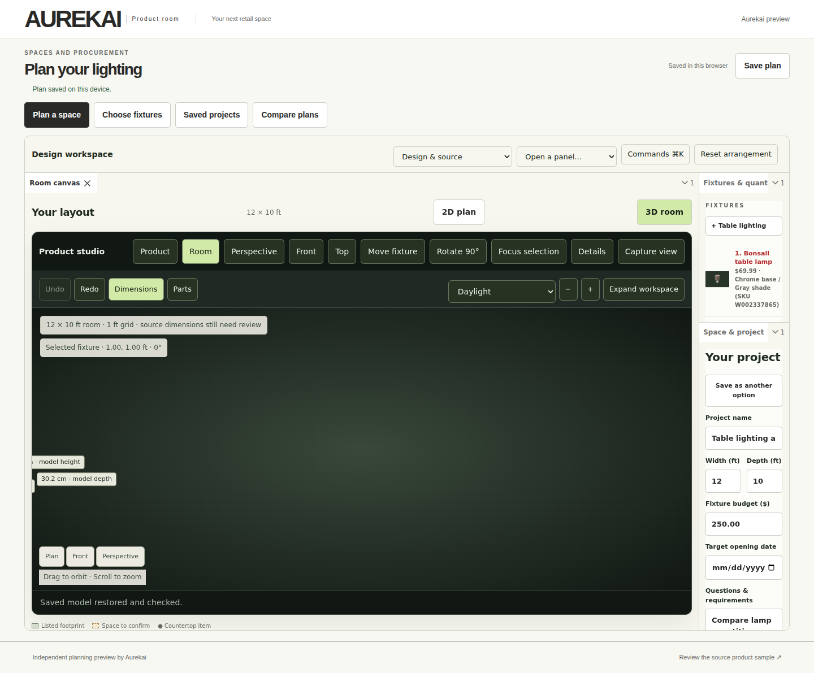
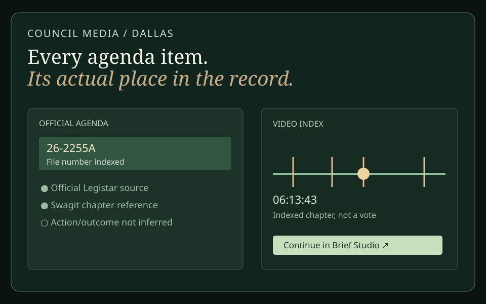
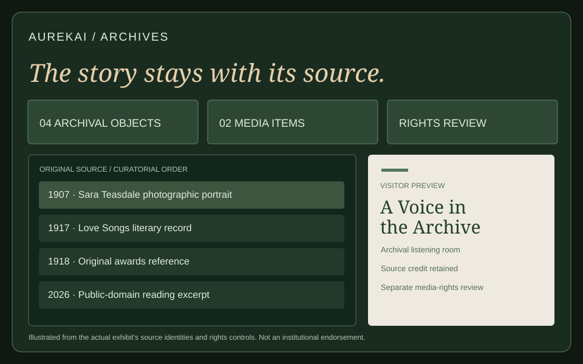
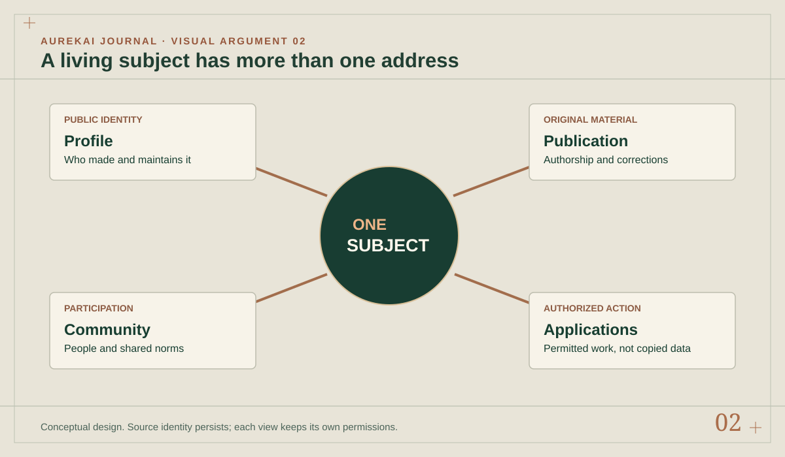
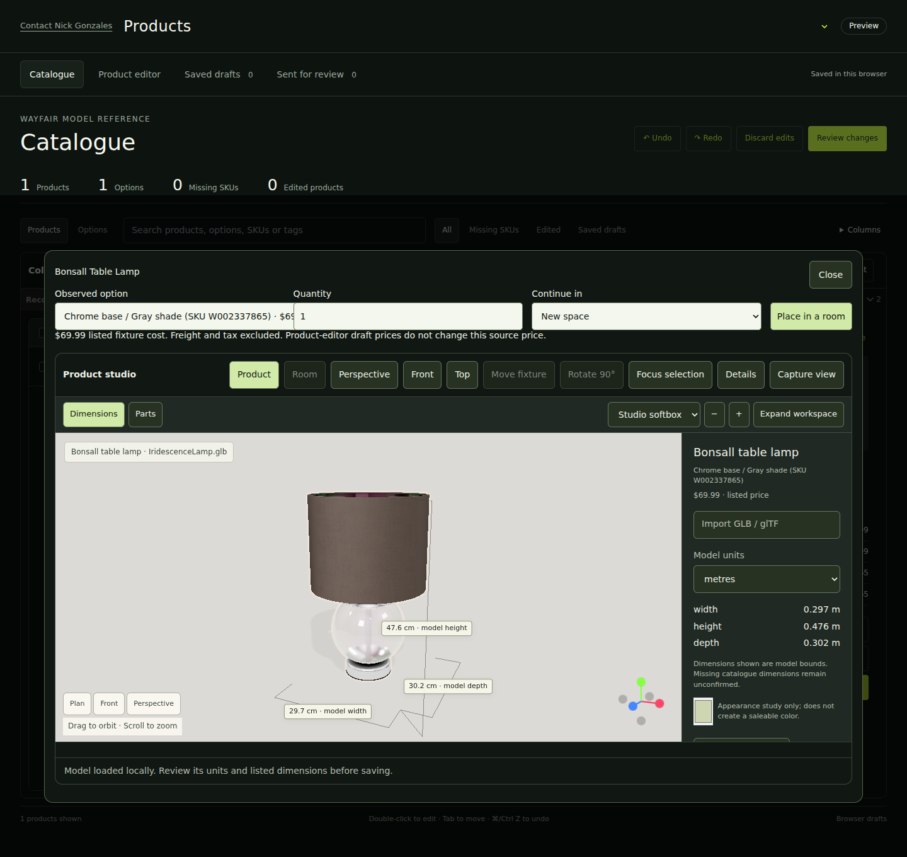
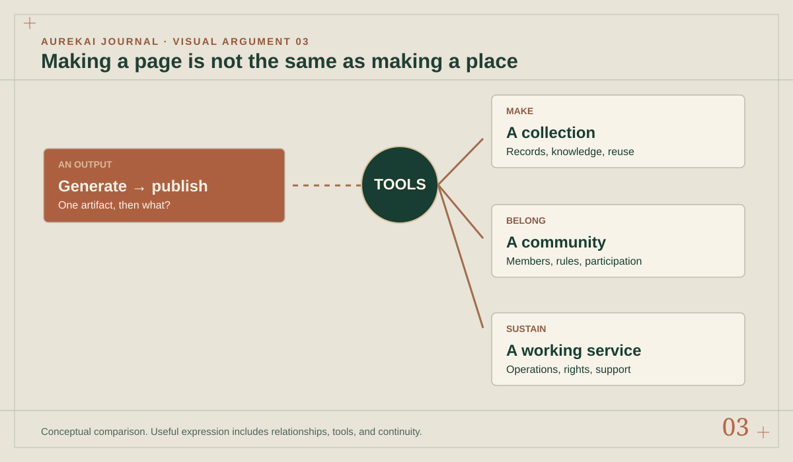
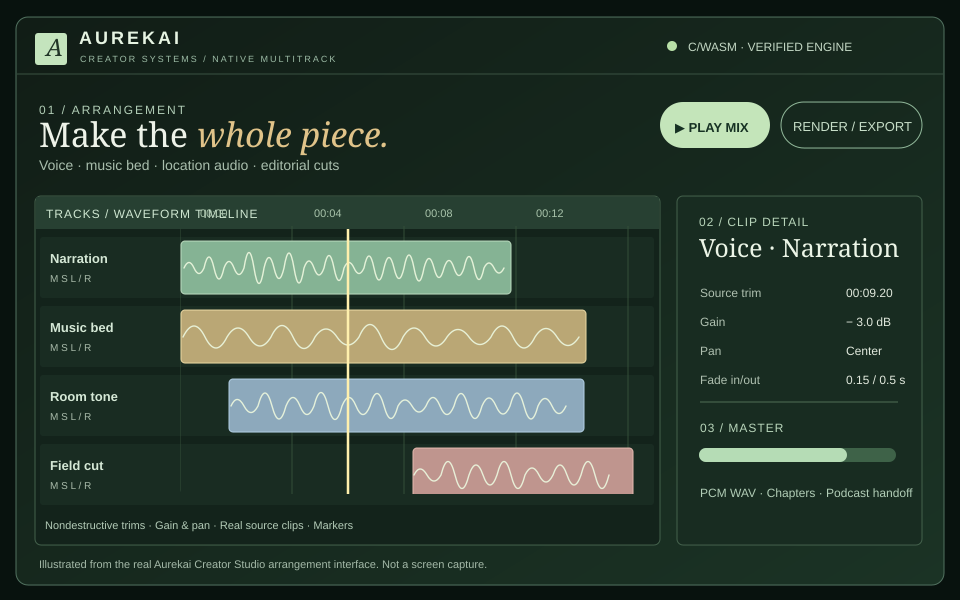
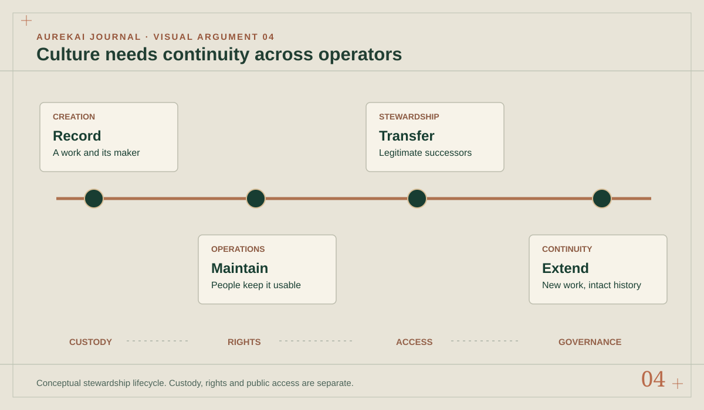

Aurekai Journal Four connected series / November 2026
The internet
is not finished.
We have more ways to create software than ever, yet much of the internet remains expensive to use, difficult to inhabit and frighteningly easy to lose.
These stories ask four connected questions: who decides what is worth building, who gets the tools to build it, what a richer digital place could become, and who keeps its culture and institutions alive after the platforms move on.


The argument
This isn't a prediction that everything becomes another app.
It is an argument that more people should be able to make and sustain useful things together. Good tools make creation possible. Independent evidence keeps decisions honest. Living profiles connect the resulting work. Publishers, creators and community operators keep that world meaningful. Each story can be read alone; together they describe a different kind of internet.

Profiles / Publishing
A website is a front door. What lives behind it?
Independent people and organizations already have publications, collections, services, members, histories and projects. Instead of six disconnected representations of the same work, imagine an enduring subject with multiple public and private views—each recognizable and independently owned.

What this diagram leaves out
Connecting subjects is not permission to merge their data or identities.
Read the argument
- 01Sites are dead. Long live the web.An institution should not end at its homepage.
- 02The profile is bigger than the personPeople, places, objects and organizations need richer public presences.
- 03When reading becomes participatingA beautiful story can also lead into relevant, authorized activity.
- 04Why does every app want to be everything?Composition can be an alternative to the universal super-app.

Tools / Participation
What happens when almost anybody can make serious software?
Excel, Minecraft and early social tools gave ordinary people flexible building materials. AI brings more people into software creation, but independent businesses and communities still need trust, operations, distribution, rights and affordable ways to work together. Accessibility is about participation, not just output volume.

What this diagram leaves out
More tools do not automatically create safe or valuable communities.
Read the argument
- 01Nobody called the pizza shops slopLower barriers can enable genuine local participation.
- 02We didn't run out of ideasSome missing experiences have been blocked by inaccessible tools.
- 03Minecraft built a world. What about everything else?Creative primitives are only the beginning of an ecosystem.
- 04The spreadsheet that became a businessEnd-user modeling made unexpected operations possible.
- 05Who gets to have sophisticated software?The lifetime cost of useful tools is not their subscription price.
- 06What happens when anyone can make an app?Abundant code makes maintenance and judgment more important.

Operators / Cultural memory
Who keeps the internet when the platforms move on?
Editors, clippers, radio producers, forum moderators, independent researchers, librarians and community owners do more than generate content. They maintain cultural records, relationships and livelihoods. An archive can make their work visible without becoming its owner, but preservation and rights need to be considered together.

What this diagram leaves out
Preservation does not automatically grant publication or reuse rights.
Read the argument
- 01Who keeps the internet alive?The people who operate communities are more than social accounts.
- 02The local archive that never got uploadedMuch of our cultural record is still outside search.
- 03A library of Alexandria selected by demandWhat survives is shaped by attention and resources.
- 04The archive is not the ownerPreservation is not unlimited permission to exploit a work.
- 05The clip is not the whole workEditors and clippers add value without replacing the source.
- 06The internet has an inheritance problemWho carries a digital institution forward when its operator leaves?
- 07A union for the internet?Collective rights, licensing and operating power for independent contributors.
From reading to doing
An article should lead somewhere when you need it to.
The public Aurekai examples below are demonstrations, not proof that every proposed institutional or social workflow has already shipped. They are starting points for exploring how one source or subject can connect to real work.
About the publication
Readable sources. Room for disagreement.
These are edited Aurekai essays, not exports of private conversations or reports of features being universally available. Research sources link directly to their original publishers. Our examples distinguish public demonstrations from future product ambitions and preserve the difference between a fact, an argument and a proposed system.
Subscribe to the RSS feed ↗ Read Aurekai Fieldwork ↗ Explore public applications ↗